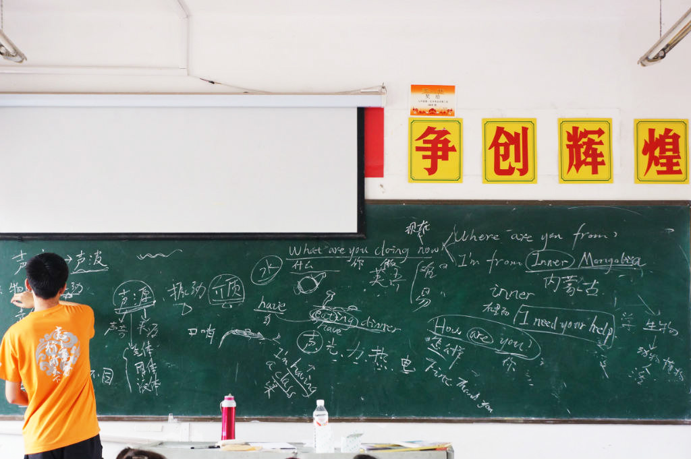
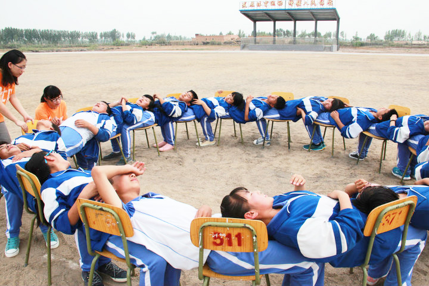
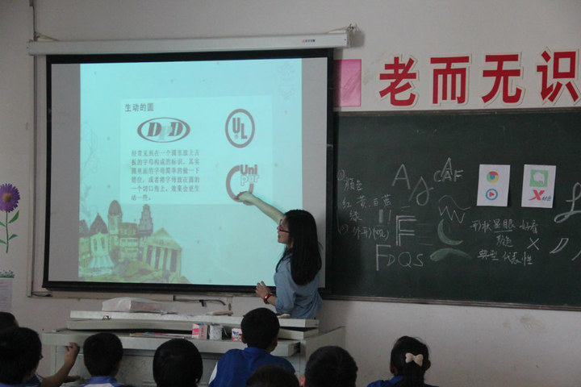
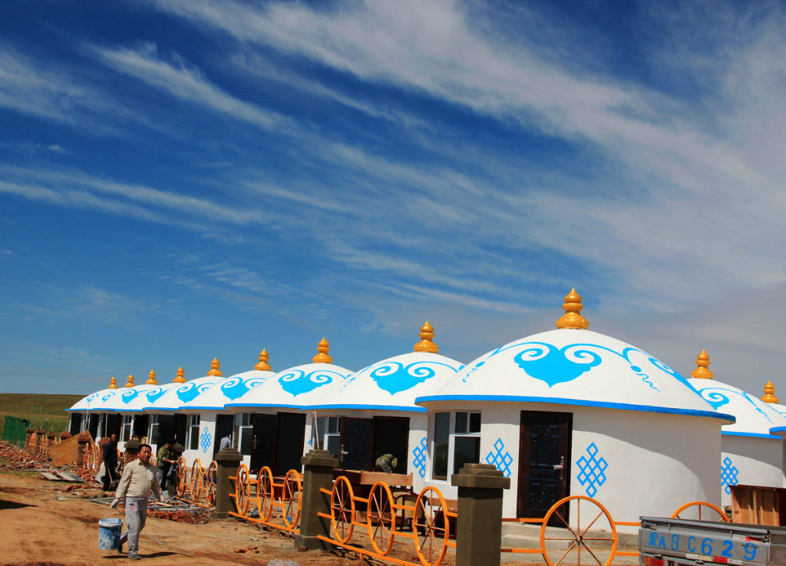

The Into Miracle Project (Into Miracle Project) was established in 2013 and is the youngest project team in BTP. Every year around June, we form a teaching support team of about 20 people and go to primary and middle schools in Bayannur, Inner Mongolia for a two-week teaching support activity. Among our activities, the courses face primary schools and are divided into three major sections-general courses, quality development courses, and health courses; while the weekly camp faces junior high schools and is a comprehensive quality development activity.
As a "long-term short-term support", the characteristics of the Into Miracle project team are as follows.
1. Local characteristics:
The school has complete infrastructure, with various activity rooms and multimedia teaching. Children are good at using the Internet, have a wide range of knowledge and diverse interests and hobbies.
2.distinctive activities:
2.1 Student files
In the student files, we record the basic information, photos, characteristics and stories of every children that we have tought. During the voluntary teaching period, each class will be assigned to fixed volunteers in order to let them be familiar with the student's situation. After the teaching period, the volunteers will sort out the student files. Through student files, every volunteers can integrate the students information, understanding the students better and witnessing their growth and change.
2.2 Long-term coorperative schools
We have maintained a good long-term coorperative relationship with local schools. After previous teaching, the school leaders and students have acquainted themselves with the identity of volunteers and the annual arrival of us.
2.3 The curriculum
We offers general education courses, quality development courses and health courses. General education courses for primary schools include oral English, natural science experiments, art appreciation (fine arts and music), social sciences, humanities, etc. The quality development course can enhance cohesion，cultivates students' teamwork ability and collective concept through quality development activities. Health courses equip children with the basic knowledge and skills to ensure both physical and mental health. There are small lectures for life first aid , disease prevention and treatment, physiology and students' emotional problems in life. The Into Miracle Project now has more mature sex education classes, first aid classes and other innovative courses.
2.4 week of camp
We use one day at the weekend to hold comprehensive quality development activities. The content includes a task-guided game and free elective courses. Students can participate in hosting, organizing activities, etc., or choose courses according to their interests (such as art appreciation, social science), and improve their comprehensive quality through weekly training camp.
Our thoughts:
What can we bring to children who do not have significant material-scarcity? Why do we promote fundamental education in Inner Mongolia?

1.Directing & guiding
In the areas where we teach, children usually have a strong ability to comprehend and accept new ideas. They are also relatively more mature. However, few people tell them how to select and process information. But we, as volunteers, can enlighten and lead them. As university students, we are mature and sensible while as young people, we are friendly and full of enthusiasm. It is our task to stimulate their curiosity and creavitity.
2.accompany & influence
With viewpoints and insights of university students, we are different from elementary and middle school students. Although we face elementary and middle school students, we still need to communicate with them equally. When chatting and playing with them, our behavious and judgments are able to give children some directions one day in the future.